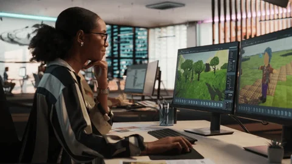
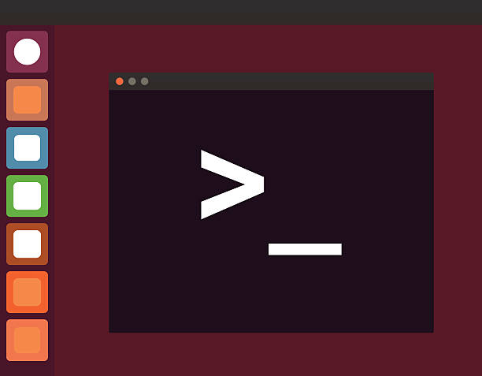

My Projects

CSCI 1300 Game
My first programming project ever was my game in CSCI 1300. I completed this project in Spring of 2024 after I had learned to program for the first time in "Starting Computing". This game albeit simple encompassed my knowledge from the class.

CSCI 2270 Linux Terminal
My latest project was completed last semester in the class "Data Structures". The final project was replicating a Linux Terminal that focused on utilizing the many data structures we learned about in the class.

Hackathon: Grove
I was invited to participate at CU Boulder's women in STEM and Buisness Hackathon. It was a great experience where a team and I created a productivity app called "Grove". This app was a social way to promote project completion within a corporate setting.